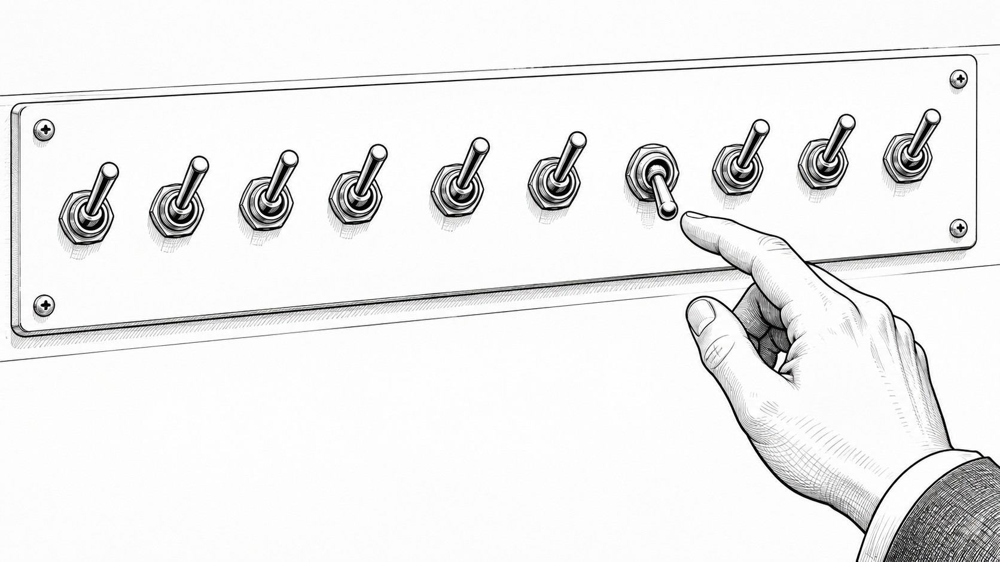

売れた理由が分からない人は、全部変えすぎです。

どーも！とーるです！
僕、中学生の頃には16進数がなんとなく分かっていました。……
こう書くと、「昔から頭良かったんですね」みたいに思われるかもしれませんが、全然違います。
僕は小学生、中学生、高校生と、ずっとゲームばっかりやっていました。
家でもゲーム。休みの日もゲーム。ゲーセンにも通う。
今思えば、もっと青春っぽいことあっただろ、とは思います（笑）
当時は、ゲームボーイ。
Nintendo 64。
初代PlayStation。その辺の時代です。そして当時、市販されているゲームの改造ツールがありました。
ゲーム機自体を分解するとかじゃなく、ゲームの中で使われている数値を探して、そこを書き換える。
例えば、アイテム99個。お金MAX。いきなりLV99。
そんな、今考えると、ゲームの寿命を自分で縮める遊びをしていました（笑）
「この数字、どこに入ってるんだ？」
ゲームの中では、アイテムの数。HP。所持金。
キャラクターのLevel。
いろんな情報が、ものすごい数のデータの中に入っています。
当時の僕は、16進数なんて学校で習ったから覚えたんじゃありません。
ゲームを改造しようとすると、必要だったから覚えただけです。
0、1、2、3……と進んで9の次に、A、B、C、D、E、F。
「なんで数字にアルファベット出てくんねん」と思いながら覚えました（笑）
ただ、16進数が分かったからといって、すぐ改造できるわけじゃありません。
ゲーム全体には、とんでもない量のデータがあります。
その中から、例えば「アイテムの個数を管理している場所」を見つけなきゃいけない。
これが大変なんです。
そこで「一個だけ変える」
例えば、アイテムボックスの一番上に、ポーションが10個あったとします。
まずゲームを起動する。アイテム画面を開く。
ポーションを1個使う。
10個から9個になります。
このときのデータを調べる。次。
同じような状態から、今度はポーションを2個使う。
10個から8個になります。
他の行動は、なるべく同じ。
すると、1回目と2回目で変化したデータを探していく。
もちろん、変わっているところは一つとは限りません。
ゲームの中では裏でいろいろな処理が動いています。でも、比較を繰り返していくと、だんだん候補が減っていく。
「ってことは、この辺がアイテム個数っぽいな」となる。じゃあ次。
一番上のアイテムを使う。
今度は、上から2番目のアイテムを使う。
それ以外は同じように動く。
すると今度は、「どの場所のアイテムなのか」に関係する部分が見えてくる。
次は、違う種類のアイテムで試す。
すると、「何のアイテムなのか」に関係するところが見えてくる。
一個ずつ条件を変えて、違いを見る。そして、「ってことは、ここか？」を繰り返す。
中学生の僕は、そんなことを延々やっていました。暗いですね（笑）でも、今になって思うと、僕がマーケティングでやっていることも、あんまり変わらないんです。
売れないと、なぜか全部変える
例えば、商品を販売しました。売れませんでした。
すると、商品名を変える。価格を変える。LPを変える。
プロフィールを変える。投稿内容を変える。ターゲットを変える。
特典を追加する。募集期間も変える。
ついでに髪型まで変える。
最後のは関係ないです（笑）で、次の募集で売れた。「やった！」となる。でも、ここで問題があります。
なんです。商品名？価格？LP？発信？特典？ターゲット？募集期間？
全部一気に変えたので、分かりません。逆も同じです。
全部変えて、また売れなかった。
何が悪かったのか、やっぱり分からない。
これ、僕が中学生の頃に、ポーションを使いながら、キャラクターも移動させて、装備も変えて、お金も使って、セーブもして、
「どこのコードがアイテム個数なんだ？」と探しているようなものです。
いや、分かるわけないんです（笑）
変わったものが多すぎるから。
「改善した」ことと「原因が分かった」は別
SNSをやっていると、改善っていっぱい変更することみたいになりやすいです。
今月売れなかった。よし、来月は全部作り直そう。でも僕は、それを改善とはあまり思っていません。
もちろん、明らかに全部ダメなら、大きく変えることもあります。
ただ、「何が原因だったのか知りたい」なら、変えるものは少ない方がいい。
なぜなら、一個だけ変えて結果が変わった方が、理由を考えやすいからです。
投稿でもそうです。
いつもと、テーマも違う。デザインも違う。投稿時間も違う。
文章量も違う。タイトルの付け方も違う。CTAも違う。そして、その投稿だけ伸びた。
「このデザイン伸びる！」
いや、まだ分からないです（笑）
テーマが良かったかもしれない。
タイトルかもしれない。
たまたま投稿時間が良かったかもしれない。
その前日のストーリーズから来た人が多かったかもしれない。
一回では、まだ分からない。
だから「ってことは」を繰り返す
僕は、マーケティングって、結構この「ってことは」の連続だと思っています。
この投稿だけ反応が良かった。ってことは、何か違いがある。
タイトルかな。じゃあ、似たテーマでタイトルだけ少し変えてみよう。また反応が変わった。
ってことは、タイトルが影響してる可能性が高そう。
じゃあ次も試す。また似た結果になった。
「あー、やっぱりここかも」
こうやって、少しずつ特定していく。
商品でも同じです。価格を変えたら売れた。
じゃあ、価格が原因だったのか。
それとも、安くしたことで買いやすくなったのか。
もともと欲しい人はいたけど、価格だけがネックだったのか。
一個の結果から、また次の仮説を作る。
感覚で当てるのは、全然悪くない
最初から全部、理屈で考えなくてもいいと思っています。
僕も、「この投稿は、この理論を使って、この数値がこうなって……」なんて毎回考えてません。
感覚でやります。
「これ面白そう」「たぶんこっちの方が刺さる」「なんとなく今回はこれでいこう」
全然あります。それで売れてもいい。
むしろ、最初はそれでいいと思っています。
「やった、売れた！」で終わるのか。
それとも、「……なんで売れたんだ？」まで考えるのか。
感覚で見つけて、論理で残す
中学生の頃の僕も、最初から答えなんて知りませんでした。
「この辺じゃね？」です（笑）試す。違った。じゃあ次。変える。
比較する。また違った。候補を減らす。「あ、ここっぽい」。また試す。
そうやって、大量のデータの中から、目的の場所を少しずつ見つけていました。
マーケティングでも、僕は同じだと思っています。最初は感覚。
やってみる。結果を見る。そこから違いを探す。仮説を作る。一個変える。
もう一度見る。
それを繰り返すと、最初は「なんとなく売れた」だったものが、少しずつ「たぶん、これが効いてる」になる。
さらに繰り返すと、「この条件なら、これをやると反応が上がりやすい」まで見えてくる。
ここまで来ると、再現性になります。
人に教えられるのは、そのあと
これって人に教えるときにも大事です。自分では売れた。でも「なんで売れたんですか？」と聞かれて、「いや、なんとなく……」だと、相手は再現できません。
「僕はこれで売れました！」だけなら、ただの体験談です。でも、何を変えたのか。
何が変わらなかったのか。
どこで反応が変わったのか。何回試したのか。
どんな人にはうまくいかなかったのか。
そこまで分かってくると、初めて人にも説明できます。だから僕は、感覚派か論理派かみたいな話を、あまり重要だと思っていません。
感覚でやってみる。
↓
当たる。
↓
「なんで？」を考える。
↓
一つずつ確かめる。
↓
理由が見えてくる。
↓
また使う。
僕はこっちの方が、実践では使いやすいと思っています。
一気に全部変えない
マーケティングって、難しい言葉をたくさん知ることより、案外こういう地味な作業の積み重ねだったりします。
一気に全部変えない。一個ずつ見る。違いを探す。仮説を作る。また試す。
昔の僕が、ゲームのコードを眸めながら「ってことは、ここか？」とやっていたのと同じです。なので、次に何かうまくいったら、「やった！」
のあとに一個だけ付け足してみてください。
中学生の頃、アイテム99個にするために覚えたことが、まさか今になって仕事で役に立つとは思いませんでした（笑）
人生、何が伏線になるか分からないですね。
とーる｜猫好きの行動経済アナリスト